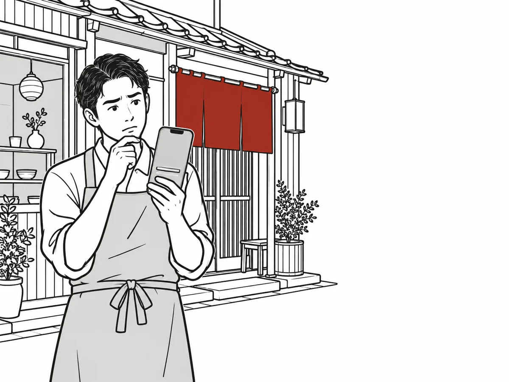
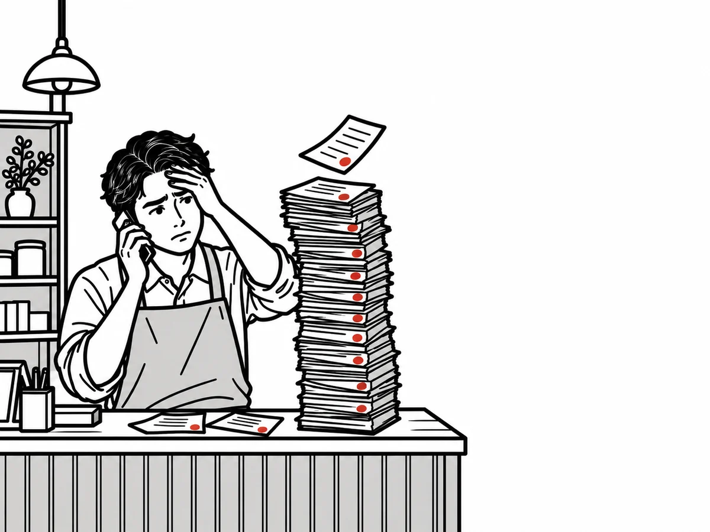
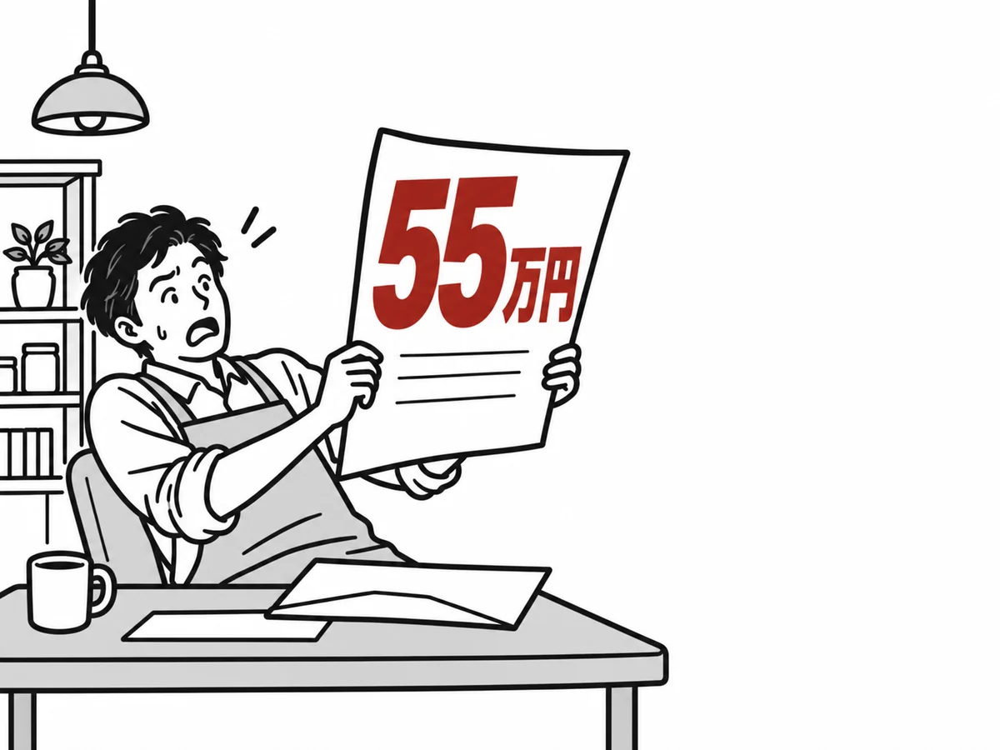
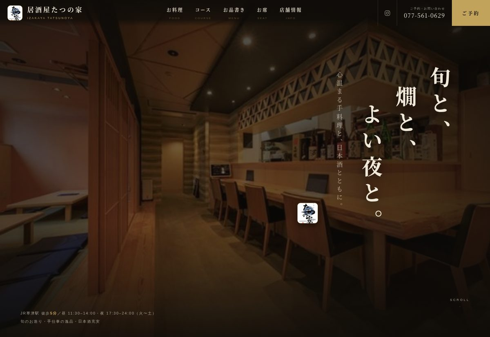
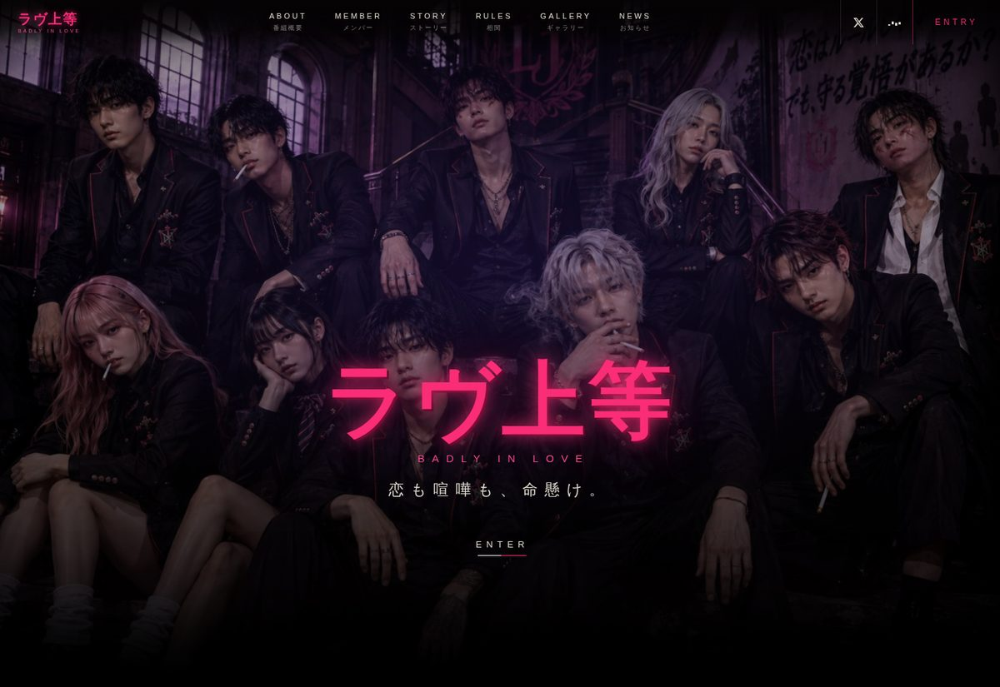
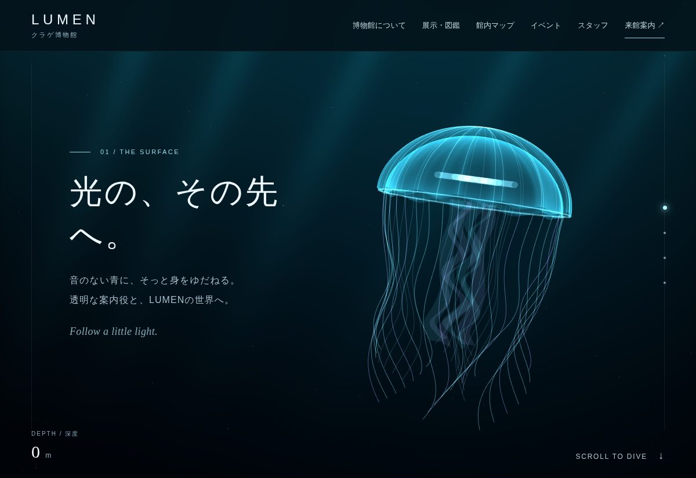
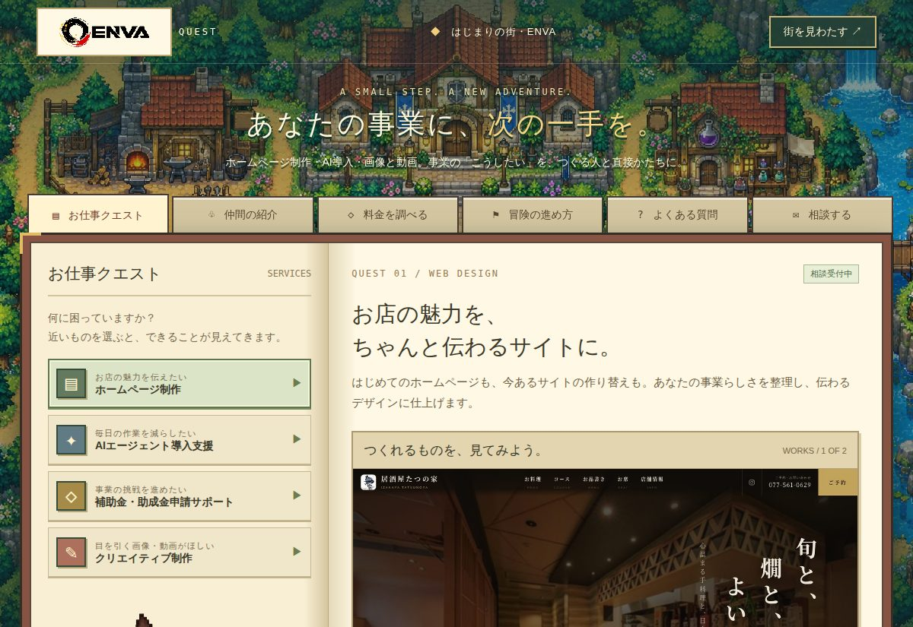
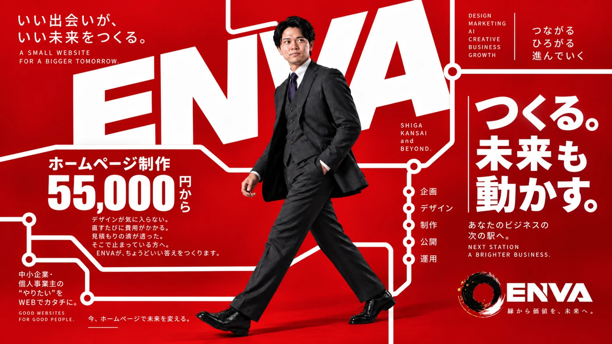
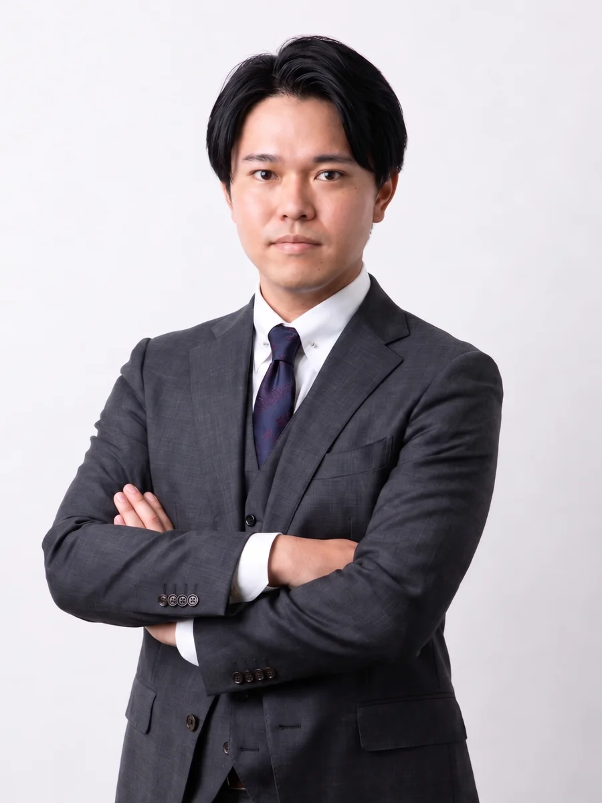

その見積もり
ひと桁多くないですか。
作り替えたいのに、金額を聞いて止まってしまった方へ。
いま見ているこのページも、この値段で作っています。
打ち合わせから公開まで、代表がひとりで担当します。
- PRICE
- 0円〜税込
- DELIVERY
- 1〜2週間目安
- EXTRA COST
- 0円込み
- MAINTENANCE
- 0円／月〜任意
作り替えも新規も同額です
お急ぎの事情があれば、ご相談ください
仕掛け・原稿・公開作業まで含みます。別途は画像のAI生成のみ
ご不要であれば付けません
たとえば、こう変わります
真ん中の線をつかんで、左右に動かしてみてください。左が、よく見かける形。右が、ENVAで作り替えたあとの形です。
※「みのり工務店」は架空の会社で、ホームページも架空のものです。実在の会社・サイトではありません。
枠の中は、そのままスクロールしてご覧いただけます。どちらも架空の会社・架空のホームページで、見本としてENVAが制作したものです。
作り替え前を別のタブで開く ／ 作り替え後を別のタブで開く
作り替えたいのに
動けずにいる理由
いただくご相談の多くは、この3つのどれかに当てはまります。心当たりがあれば、お力になれるはずです。
見た目が店と釣り合っていない
悪くはない。ただ、ご自分のお店の空気とは違う。ひな形に文字を流し込んだだけでは、どうしてもこうなります。何年経っても愛着が湧かないのは、そのためです。

直したいのにそのたび費用がかかる
営業時間を変えるだけで数千円。写真を1枚差し替えるだけで、また見積もり。だんだん頼むのが億劫になって、そのうち更新が止まってしまう。止まったサイトは、それだけでお店まで止まって見えてしまいます。

見積もりを取ったら桁が違った
作り替えのご相談をしたら、30万、50万と言われた。出せない額ではないけれど、それだけの値打ちがあるのかは分からない。ここで足が止まっている方が、いちばん多いです。

腕がないから選ばれないのではなく、
看板が釣り合っていないだけのことが、少なくありません。
やっていること
やらないことも、先にお伝えしておきます。難しい言葉でごまかすことと、作ったあとに連絡が取れなくなることは、いたしません。
正直に申し上げると、ネット販売や予約システムが主役のサイトや、「検索で1位にします」というお約束をご希望の方には向いていません。お店の看板を、きちんとした形でインターネットに置きたい方のためのサービスです。
ホームページの作り替え
今あるサイトの文章も写真も、多くはそのまま活かせます。手放すのは、古くなった見た目だけ。「また一から説明するのは大変」という方が多いので、まずこちらで今のサイトをすべて拝見してから、足りないところだけお伺いします。新しく作る場合も料金は同じです。
動きの仕掛けをつくる
最初に円が描かれるところ。見出しが下から立ち上がるところ。カーソルに反応するところ。そうした動きのことです。動画も入れられます。派手にするためではなく、「ここは手をかけてあるな」と伝えるために入れます。他社では1つずつ別料金になりがちですが、ENVAでは料金に含んでいます。
写真と原稿をつくる
「うちには、これといった特徴はないんです」。いちばんよくお聞きする言葉です。けれど30分お話を伺うと、たいてい2つか3つは見つかります。それを、お客様が読んで分かる言葉に整えるところまでが仕事だと考えています。専門用語のままでは載せません。
公開後のお手入れ
年末年始のお休みを載せる、値段を直す、新しいメニューを足す。直すたびに費用がかかることに悩んでご相談に来られる方が多いので、ここも抑えた料金にしています。もちろん、ご不要の方は付けなくて大丈夫です。
見た目は上等
値段は控えめ
あとから「これは別料金です」とお伝えするのは避けたいので、先に書いておきます。仕掛けも、原稿も、公開作業も、料金に含んでいます。
ホームページ制作・作り替え
0円〜税込
作り替えも新規も同額
この金額で収まる条件：1ページ完結／写真はお手持ちのもの（スマホ撮影で大丈夫です）
- 打ち合わせ（オンラインまたはご訪問）
- 構成づくり・原稿の書き起こし
- デザイン・制作
- 動きの仕掛け（このページと同じもの）
- スマホ／パソコン両対応
- お預かりした写真の補正・配置
- 地図・電話ボタン・お問い合わせ
- 検索に出るための設定／公開作業
ページを増やす場合、予約システムやネット販売を入れる場合は、内容を伺ってからお見積もりします。
お見積もりは無料です。お出ししたあとに、こちらから追いかけてご連絡することはありません。
公開後のお手入れ
0円／月〜任意
税込／任意です
- 文章・写真の差し替え（月2回まで）
- サーバー・ドメインの管理
- 不具合が出たときの対応
- 臨時休業などのお知らせ掲載
ご不要の方は付けなくて大丈夫です。ご自身で更新されたい方には、やり方をお伝えします。解約はいつでもできます。
おおよその金額を、その場で
4つ選ぶだけです。正式な金額は、今のサイトを拝見してからお伝えします。
※ いずれも税込の目安です。5ページ以上の場合や、予約・ネット販売などの仕組みを入れる場合は、内容をお伺いしてからお見積もりします。画像の支給がない場合は、お店に合わせた画像をAIで生成してご用意します（＋11,000円）。撮影には伺いません。
- ページを増やす3ページ 99,000円〜／5ページ 143,000円〜（目安）
- 画像をAIで生成してご用意する＋11,000円（写真の支給がない場合）
- 予約・ネット販売などの仕組みを入れる内容をお伺いしてからお見積もり
※ サーバー代・ドメイン代（年間で数千円ほど）は実費として別途かかります。すでにお持ちであれば、そのままお使いいただけます。
※ お支払いは銀行振込で、着手金50％（ご契約後）と残金50％（公開・ご確認後）の2回に分けてお願いしています。
他社との比較表／制作会社選びで困りがちな5つ／55,000円の内訳／今のサイトの自己診断（10項目）／業種別・載せるべき7項目
制作実績
数は多くありません。そのかわり、隠さずすべてお見せします。お客様の実績は、掲載のご許可をいただいたものから順に載せています。

居酒屋たつの家 様（草津市）
和モダンの1ページ完結。参考にされたいサイトを最初に教えていただいたので、「思っていたのと違う」が一度も起きませんでした。

ラヴ上等（架空の番組の特設サイト）
どこまで作り込めるかを試した自主制作。出演者10人のプロフィール、日ごとのストーリー、学園のマップまで入れた、要素をすべて盛り込んだ見本です。

LUMEN（架空のクラゲ博物館）
光と透明感をテーマにした自主制作。スクロールで深く潜っていく構成で、展示・館内マップ・イベント・来館案内まで、施設のサイトに要るものをひと通り入れた見本です。

ENVA QUEST（ゲーム画面風の自社サイト）
ENVAの案内を、RPGの町の画面に置き換えた遊びの見本。同じ内容でも見せ方でここまで印象が変わる、という例としてご覧ください。
動画とポスターも、
AIでつくれます
撮影も、スタジオも、モデルも必要ありません。写真1枚と、伝えたい言葉があれば、まずポスターが作れます。そして、そのポスターはそのまま動画になります。下は、ENVA自身の紹介用に制作したものです。

正面か横向きの写真が1枚あれば十分です。スマホで撮ったもので構いません。
ポスター1枚と、8〜15秒の動画1本の目安です。ホームページと一緒にご依頼いただく場合は、サイトの公開に合わせてお渡しします。
ポスターと動画のセットの目安です。ホームページと一緒のご依頼は割引いたします。ポスターのみ、動画のみでもお受けします。
こんなところで使えます
- ホームページのいちばん上で流す写真より目が止まる
- Instagram・TikTok・YouTubeショート縦型も作れます
- お店の前のモニター・サイネージ音なしでも伝わる
- 求人・採用ページの紹介代表の顔が伝わる
- チラシ・ポスター同じ素材で
用意していただくもの
- 写真1枚ご本人でも、お店でも、商品でも
- 伝えたい言葉を1〜2行なければ一緒に考えます
- お店の色・ロゴあればで結構です
※ AIで制作するため、細かい指の形や文字がわずかに崩れることがあります。気になる箇所は作り直しますので、お申し付けください。
「うちの店でも作れますか？」というご質問だけでも、お気軽にどうぞ。
ご相談から公開まで
おおよそ1〜2週間です。お急ぎの事情があれば、遠慮なくお申し付けください。
-
01
お問い合わせ
お電話・メール・LINE、どれでも構いません。「今のサイトを見て、いくらぐらいか教えてほしい」で大丈夫です。こちらからしつこくご連絡することはありません。
-
02
好きなサイトのURLを1〜3本、教えていただくここが要
同業でなくて構いません。ここを最初にやると、「思っていたのと違う」がほぼ起きなくなります。ENVAがいちばん大切にしている工程です。
-
03
お話を伺う（30分〜1時間）
強み、いちばん来てほしいお客様、載せたい情報。「特にない」から始めていただいて大丈夫です。こちらから順にお伺いします。
-
04
制作・確認
形になった時点で一度お見せします。気になるところは2回まで直します。誤字の訂正や、写真を1〜2枚入れ替えるといった小さな直しは回数に数えません。3回目以降は1回5,500円で承ります。
-
05
公開・お支払い
公開作業はこちらで行います。サーバーやドメインをお持ちでなければ、その手配から承ります。残金のお支払いは、公開してご確認いただいたあとで結構です。
なぜこの値段で
できるのか

ENVA 代表 棚橋瑠海
安いから雑、と思われるのが
いちばん避けたいことです。
ホームページの値段の多くは、人が動いた時間でできています。営業が訪問して、ディレクターが打ち合わせに出て、デザイナーに渡して、コーダーに渡して、また打ち合わせをする。関わる人が増えるほど、伝言ゲームの分だけ値段が上がります。30万、50万というお見積もりの中身は、多くの場合これです。
ENVAは、すべてを代表ひとりで行います。伝言がないので、その分がそのまま省けます。事務所も、営業担当も、下請けもありません。
下ごしらえ（今あるサイトを読み込む、原稿の下書き、写真の整理）には最新の制作ツールを使って、工程そのものを短くしています。浮いた時間は、料金を下げることと、お話を伺う時間に充てています。
一方で、機械に任せないところも決めています。文章はすべて、そのお店のために書き下ろします。どこかで見た文章を貼り付けたページは、読めば分かってしまうものです。
いちばんの答えは、いま見ているこのページです。このページを作った同じ人間が、同じやり方でお作りします。
よくいただく質問
会社概要
- 屋号
- ENVA（エンヴァ）
- 事業
- ホームページの作り替え・新規制作、公開後のお手入れ
- 代表
- 棚橋瑠海
- 拠点
- 滋賀県
- 対応エリア
- 滋賀県全域（草津・大津・栗東・守山・野洲・近江八幡・彦根・長浜ほか）、京都・大阪・兵庫・奈良・三重。遠方はオンラインで
- 受付
- 10:00〜19:00（土日祝もご連絡いただけます）
- 連絡先
- enva0903@gmail.com／公式LINE
まずは今のサイトを
お見せください
「どこが良くないか見てほしい」というご相談だけで大丈夫です。お見積もりは無料です。金額をお伝えしたあと、こちらから追いかけてご連絡することはありません。他社のお見積もりと並べて、ゆっくり比べてください。
お見積内容を確認の上
担当者より追ってご連絡いたします。